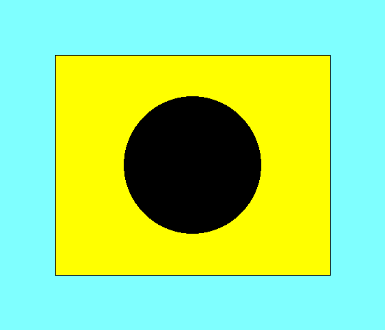
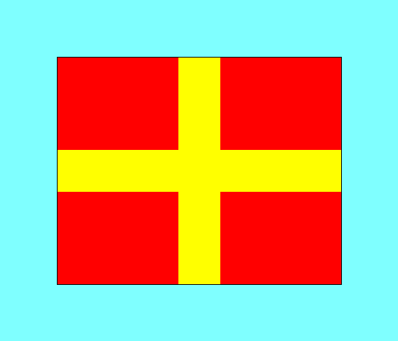
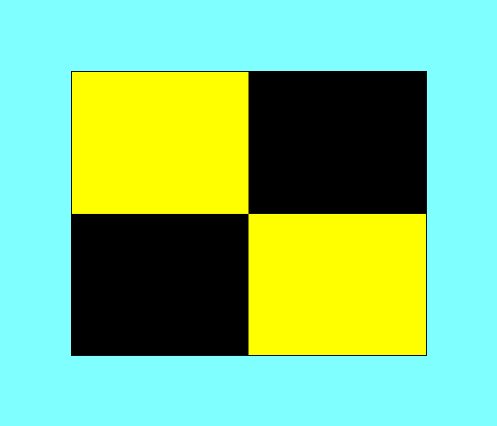

⛵ WKSC Class Flags
Class Identifiers Used At WKSC
These flags are used at WKSC to identify fleets and classes
during racing and tidal sailing.

E
Star Class

I
Hilbre Class

R
Falcon Class

S
Handicap Tidal

D
Cruisers

L
ILCA (Laser)